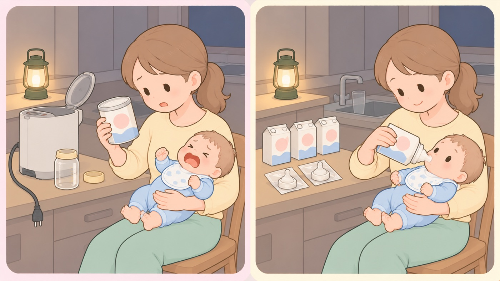

もしものとき
赤ちゃんがいる家の災害への備え
ミルクだけで生きている時期。水と熱が止まったときに何で飲ませるかを先に決めておく
大人は3日食べなくても耐えられますが、赤ちゃんは数時間ごとに飲まないと脱水になります。内閣府と厚生労働省は、断水や停電で授乳にあたっての清潔な環境が確保できない可能性を挙げ、平時から育児用ミルクと使い捨て哺乳瓶、消毒剤などを備えておくよう求めています。備えるものは月齢で変わります。いまの月齢に合うものを、月齢が変わるたびに入れ替えます。

- すること：乳児用液体ミルクを備える
内閣府と厚生労働省は、ライフラインが断絶された場合においても、水等を使用せずに授乳できるものとして乳児用液体ミルクを挙げています。調乳済み・滅菌済みなので、お湯も水も要りません。常温を超えない温度で保存します。 - すること：使い捨ての哺乳瓶を、液体ミルクとセットで備える
内閣府は、使い捨て哺乳瓶について洗浄や消毒が不要で、急な停電や断水、地震などの災害時にすぐ使えるとしています。液体ミルクがあっても、注ぐものが無ければ飲ませられません。一度使ったものは再利用できないので、本数で備えます。 - すること：粉ミルクを使うなら、水と熱の条件まで備える
こども家庭庁は、飲用可能な水（硬水は避ける）を可能であれば一度沸騰させ、70℃以上のお湯で溶かすよう求めています。カセットコンロとボンベ、軟水のペットボトルが要ります。哺乳瓶を消毒できないときは、衛生的なコップで代用し、残ったミルクは処分します。 - しないこと：母乳をやめる判断を、災害を理由に急がない
厚生労働省は、ストレスなどで一時的に母乳分泌が低下することもあるが、おっぱいを吸わせられるよう、安心して授乳できるプライベートな空間を確保できるよう配慮するとしています。授乳用ケープやバスタオルを備えておくと、避難先でも場所を作れます。 - すること：避難のしかたを、首のすわりに合わせて決めておく
東京都は、首がすわっていない時期は抱いて避難し、抱っこ用のたすきやスカーフなどでしっかり固定して両手を使える状態にしておくことが重要だとしています。首がすわったらおんぶひもを使います。ベビーカーは、道路が割れたり物が散乱したりすると押せません。 - しないこと：お風呂に水をためたままにしない
東京都は、防災対策として風呂に水をためることは一般的に有効だが、子供が溺れることを防ぐという事故予防の観点からは、乳幼児のいる家庭には不向きな方法だとしています。生活用水は、ポリタンクなど別の形で備えます。 - すること：母子健康手帳と保険証を、持ち出せる場所に置く
予防接種の記録と、かかりつけの連絡先が入っています。自宅が使えなくなったときに、ここから情報をたどることになります。コピーを防災リュックに入れておきます。
この月齢で備えるもの
- 乳児用液体ミルクと使い捨て哺乳瓶（粉ミルクは水と熱が要る）
- 粉ミルク、軟水のペットボトル、カセットコンロとボンベ
- 紙おむつ（新生児・Sサイズ）とおしりふき、おむつ用のビニール袋
- 抱っこひも（両手が空く形のもの）
- 着替え、バスタオル、授乳用ケープ
- 母子健康手帳・保険証・乳幼児医療証のコピー
内閣府男女共同参画局は、備蓄は一人あたり最低3日間を求めています。 おむつのサイズは数か月で変わるので、普段使う分を多めに買って、古いほうから使う形にすると、 サイズ切れを起こしません。
🛍 グッズの選び方
PR- 液体ミルクと、注ぐものはセットで備えます。液体ミルクがあっても、哺乳瓶を消毒できなければ飲ませられません。専用のアタッチメントや使い捨てボトルが付いた組み合わせが確実です。
- 使い捨て哺乳瓶は消毒が要らないものを選びます。内閣府も、洗浄や消毒が不要で停電や断水のときにすぐ使える点を挙げています。一度使ったものは再利用できないので、本数で備えます。
- 粉ミルクを使うなら、70℃以上のお湯を作れる手段まで備えます。カセットコンロとボンベがないと、停電した時点で調乳が止まります。
- 賞味期限のあるものは、普段から使って買い足します。液体ミルクは外出のときに使い、減った分を補充すると、期限切れで捨てずに済みます。
- 明治ほほえみ らくらくミルク防災セット15本（使い切り哺乳ボトル15個入り）液体ミルクと使い切りボトルが一組。水も消毒も要らないAmazonで見る →（新しいタブで開きます）
- クロビスベビー ステリボトル 使い捨て哺乳瓶 240ml 5個入り（消毒不要・日本正規品）消毒不要。断水していても使えるAmazonで見る →（新しいタブで開きます）
- イワタニ カセットコンロ 達人スリムV CB-TS-5（日本製）ガスが止まってもお湯をわかせるAmazonで見る →（新しいタブで開きます）
- イワタニ カセットガス 12本組 CB-250-OR-12BOX（備蓄用ボックス入り）備蓄用の箱入り。本数で持てるAmazonで見る →（新しいタブで開きます）
- エルゴベビー OMNI Deluxe Mesh🏅 マザーズセレクション大賞2025（Ergobaby OMNIシリーズ）Amazonで見る →（新しいタブで開きます）
- 防災グッズ 32点セット（防災士監修・1人用）一式そろう。足りないものを考えずに済むAmazonで見る →（新しいタブで開きます）
リンクはAmazonアソシエイトリンクです。当サイトはアフィリエイトプログラムに参加しています。Amazonのアソシエイトとして、当サイトは適格販売により収入を得ています。 選び方の方針
この項目の根拠
- 災害時における授乳の支援並びに母子に必要となる物資の備蓄及び活用について（内閣府・内閣府男女共同参画局・厚生労働省 連名事務連絡・PDF）（新しいタブで開きます）
断水や停電等により授乳に当たっての清潔な環境等が確保できない可能性があること。ライフラインが断絶された場合においても水等を使用せずに授乳できる乳児用液体ミルクを母子の状況等に応じて活用すること。平時から育児用ミルク及び使い捨て哺乳瓶や消毒剤等の授乳用品などの母子に必要となる物資の備蓄も進めること。使い捨て哺乳瓶は洗浄や消毒が不要で、急な停電や断水、地震などの災害時に備えていればすぐに使えること。備蓄した育児用ミルクはローリングストック等により有効に活用できること。 - 乳及び乳製品の成分規格等に関する省令及び食品、添加物等の規格基準の一部改正について（厚生労働省・PDF）（新しいタブで開きます）
2018年8月8日の省令改正により、乳幼児に必要な栄養素を加えた液体状の乳製品を「調製液状乳」として定義し、成分規格等を設定したこと。保存性のある容器に入れ120度で4分間加熱殺菌する方法等により加熱殺菌すること、常温を超えない温度で保存すること。開封後はできる限り早く消費すること。 - 避難所等で生活している妊産婦・乳幼児に対する支援のポイント（こども家庭庁・PDF）（新しいタブで開きます）
調乳を行う前には必ず手洗いまたはアルコール消毒を行うこと。飲用可能な水（硬水は避ける）を可能であれば一度沸騰させ、70℃以上のお湯で育児用ミルクを溶かすこと。煮沸消毒や薬液消毒をした哺乳瓶の準備が難しい場合は衛生的なコップ等で代用し、残った育児用ミルクは処分すること。 - 乳児用調製粉乳の安全な調乳、保存及び取扱いに関するガイドライン（厚生労働省）（新しいタブで開きます）
粉ミルクを70℃以上のお湯で調乳する根拠。 - 妊産婦・乳幼児を守る災害対策ガイドライン（東京都福祉保健局・PDF）（新しいタブで開きます）
首がすわっていない乳児とは抱いて避難し、抱っこ用のたすき（スリング）やスカーフなどでしっかり固定して両手を使える状態にしておくことが重要であること。首がすわっている乳児はおぶいひもを用いておぶって避難すること。防災対策として風呂に水をためることは一般的には有効だが、子供が溺れることを防ぐという事故予防の観点からは乳幼児のいる家庭には不向きな方法であること。 - 災害対応力を強化する女性の視点 備蓄チェックシート（内閣府男女共同参画局・PDF）（新しいタブで開きます）
備蓄は一人あたり最低3日間の量が望まれること。乳幼児用品として、粉ミルク（アレルギー用含む）又は液体ミルク、乳幼児用飲料水（軟水）、哺乳瓶・人工乳首・コップ・消毒剤、離乳食（アレルギー対応食を含む）、乳幼児用紙おむつ、おしりふき、授乳用ケープ・バスタオル等を挙げていること。